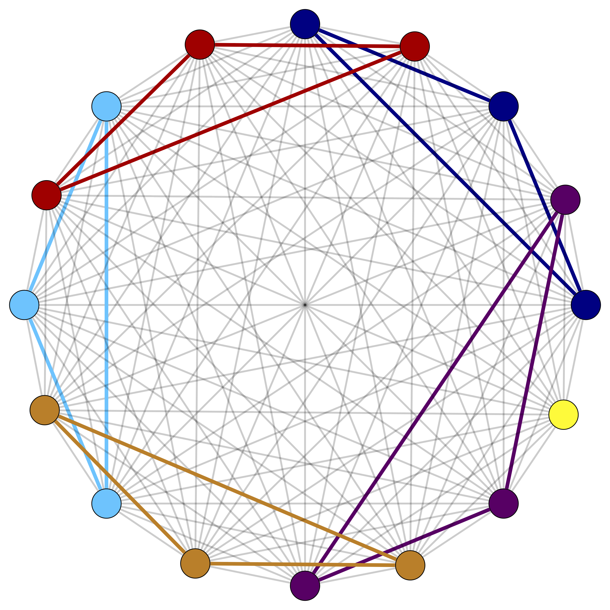

Linear Programming
In standard form for $$A \in \mathbb{Q}^{m \times n}$$, $$b\in \mathbb{Q}^m$$, $$c\in \mathbb{Q}^n$$, $$$ \begin{aligned} \min \; &c^\top x & \max \; & y^\top b \\ Ax& =b & \qquad A^\top y + s &= c \\ x &\geq 0 & s & \geq 0 \\ \end{aligned} $$$
Timeline
-

Strongly polynomial algorithm for LP
Smale's 9th question -
Interior point methods
Karmarkar -
Ellipsoid Method
Khachiyan -
Simplex Method
Dantzig -
Origins
Fourier
Weakly vs Strongly Polynomial Algorithms for LP
LP with $$n$$ variables, $$m$$ constraints$$L$$: encoding length of the input.
Standard variants of Ellipsoid and interior point methods: running time bound heavily
relies on $$L$$.
Strongly Polynomial Algorithms for LP
Dependence on the constraint matrix only
$$$\min c^\top x,\, Ax=b,\, x\ge 0$$$ Running time dependent only on constraint matrix $$A$$, but not on $$b$$ and $$c$$.
Dependence on the constraint matrix only
$$$\min c^\top x,\, Ax=b,\, x\ge 0$$$ Running time dependent only on constraint matrix $$A$$, but not on $$b$$ and $$c$$.
'Layered-least-squares (LLS) Interior Point Method'
LP solvable in $$O(n^{3.5}\log\bar\chi_A)$$ linear system solves:
Vavasis–Ye '96
Tardos' Framework
$$$\min c^\top x,\, Ax=b,\, x\ge 0, A \in \Z^{m \times n}$$$ Running time dependent only on constraint matrix $$A$$, but not on $$b$$ and $$c$$.
Our contributions: Dadush–Natura–Végh '20
The mysterious $$\bar\chi_A$$
through a matroidal lens
The condition number $$\bar\chi_A$$
A convenient characterization: lifting cost
$$\bar\chi_A$$ is the minimum number $$M \geq 1$$ such that for all $$I \subseteq [n]$$ and $$x \in \mathrm{proj}_I(\ker(A))$$, there exists $$\hat{x} \in \ker(A)$$ satisfying $$\hat{x}_I = x$$ and $$\|\hat{x}\| \leq M \|x\|$$. Ex: If $$(1,2,*,*) \in \ker(A)$$, $$\exists (1,2,x,y) \in \ker(A)$$ with $$\|(1,2,x,y)\| \leq M\|(1,2)\|$$.Properties of $$\bar\chi_A$$
$$$ \bar\chi_A=\sup\left\{\|A^\top \left(A D A^\top\right)^{-1}AD\|\, : D\in {\mathbf D}\right\} $$$ We also use $$\bar \chi_W=\bar\chi_A$$ for the subspace $$W=\ker(A)$$.
The following hold:- If $$A \in \Z^{n \times m}$$ then $$\bar\chi_A$$ is bounded by $$2^{O(L_A)}$$, where $$L_A$$ is the input bit length of $$A$$.
- $$\bar\chi_A = \max\left\{ \|B^{-1} A\| : B \text{ non-singular } m \times m \text{ submatrix of } A\right\}.$$
- $$\bar\chi_W=\bar\chi_{W^\perp}.$$
The circuit imbalance measure
...the "combinatorial" sister of $$\bar\chi_A$$
$$\Delta$$ vs $$\kappa$$
-
In general
$$\kappa \le n\Delta$$.
- For complete undirected graph: $$$\kappa = 2,\text{ but } \Delta \ge 2^{\lfloor n/3 \rfloor}$$$
as
$$$\det\left(
\begin{pmatrix}
1 & 0 & 1 \\
1 & 1 & 0 \\
0 & 1 & 1 \\
\end{pmatrix}
\right) = \pm 2$$$

- In general $$\kappa \le n\Delta$$.
- For complete undirected graph: $$$\kappa = 2,\text{ but } \Delta \ge 2^{\lfloor n/3 \rfloor}$$$
Recent weakly polynomial IPM successess
$$$\min c^\top x,\, Ax=b,\, x\ge 0, A \in \mathbb{Q}^{m \times n}$$$Linear Programming in subspace view
...a change of perspective
In standard form for $$A \in \mathbb{Q}^{m \times n}$$, $$b\in \mathbb{Q}^m$$, $$c\in \mathbb{Q}^n$$, $$$ \begin{aligned} \min \; &\langle c, x \rangle & \max \; & \langle y, b \rangle \\ Ax& =b & \qquad A^\top y + s &= c \\ x &\geq 0 & s & \geq 0 \\ \end{aligned} $$$
In subspace view for $$W = \ker(A)$$, $$d \in \mathbb{Q}^n$$, s.t. $$Ad=b$$, $$$ \begin{aligned} \min \; &\langle c, x\rangle & \max \; & \langle c - s, d \rangle \\ x& \in W + d & \qquad s &\in W^\perp + c \\ x &\geq 0 & s & \geq 0 \\ \end{aligned} $$$
Proximal feasible solutions
$$$ \begin{aligned} \min \; &\langle c, x\rangle & \max \; & \langle c - s, d \rangle \\ x& \in W + d & \qquad s &\in W^\perp + c \\ x &\geq 0 & s & \geq 0 \\ \end{aligned} $$$
Solutions given by approximate solvers
Proof sketch. Take any feasible $$x' \in W + d, x' \ge 0$$. Then the vector $$x' - d \in W$$ can be sign-consistently decomposed into circuits by Carathéodory's theorem. Ignore all circuits that do not intersect $$\mathrm{supp}(d^-)$$. Apply the remaining circuits to $$d$$ until the negativity is fixed.
Hoffman proximity theory
On the past slides we only cared about the existence of a sign-consistent decomposition. But for certification we sometimes need to explicitly compute them. Explicit computation also gives an implementation of the Hoffman proximity theoremd for Polyhedra:The feasibility algorithm
Obtain $$x$$ by applying the oracle with $$\varepsilon = 1/(\kappa \cdot \mathrm{poly}(n))$$ and consider the small variables $$J := \{i : x_i < \kappa \|x^-\|\}$$ . By choice of $$\varepsilon$$ we have $$J \neq [n]$$ . Apply the recursive solver to $$\mathrm{proj}_J(W)$$ and $$x_J$$ to obtain $$\tilde x \in \mathrm{proj}_J(W) + x_J, \ \tilde x \ge 0$$ feasible. Lift the solution back up to obtain $$$\bar x = x + L_J^W(\tilde x - x_J) \ge 0.$$$ Non-negativity follows from proximity of the recursive solver!
Proximal optimal solutions
proximity works for optimization as well!
$$$ \begin{aligned} \min \; &\langle c, x\rangle & \max \; & \langle c - s, d \rangle \\ x& \in W + d & \qquad s &\in W^\perp + c \\ x &\geq 0 & s & \geq 0 \\ \end{aligned} $$$ Let $$s \ge 0, s \in W^\perp + c$$ be a feasible dual, but not necessarily optimal solution.Complementary Slackness
$$$ \begin{aligned} \min \; &\langle c, x \rangle & \max \; & \langle y, b \rangle \\ Ax& =b & \qquad A^\top y + s &= c \\ x &\geq 0 & s & \geq 0 \\ \end{aligned} $$$ A feasible pair $$(x,s) \geq 0$$ is optimal if and only if $$\langle x, s \rangle = 0 \Leftrightarrow x_i = 0$$ or $$s_i = 0, \forall i \in [n]$$.
Weak duality
$$$ \langle c, x \rangle = \langle A^\top y + s, x \rangle = \langle y, b \rangle + \textcolor{red}{\langle x, s \rangle} \geq \langle y, b \rangle.$$$
Open questions
- Discrepancy between primal and dual feasibility. Should there really be an $$m$$ vs $$n$$ issue?
- Decrease the factor $$n$$ gap between feasibility and optimization.
- Non-deterministic methods (considering that we use non-determintic blackbox algorithms)
- Maintaining sparsity when variables are projected out
- Unifying theory of strongly polynomial algorithms of special class of LP. How to accomodate 2VPI or gen-max flow, where $$\kappa \gg \mathrm{poly}(n)$$.
- $$\kappa$$ - theory for Integer Programming (IP)
- $$\kappa$$ - theory for more general convex programs e.g. Convex Quadratic Programs or Semidefinite Programs (SDP)
- Subexponential bound on certificates of $$M < \kappa$$